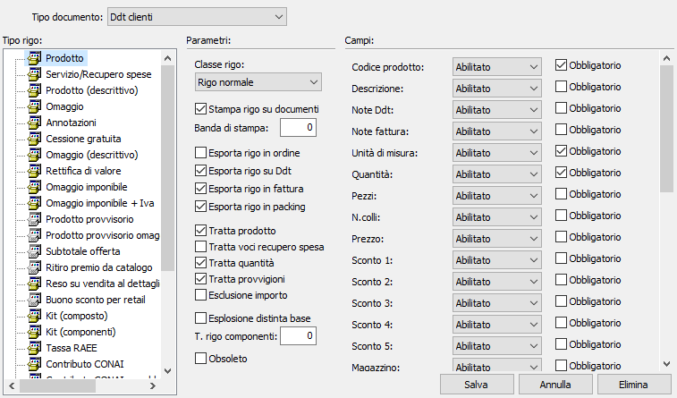

La tabella consente di manutenere le tipologie di rigo, i cui parametri governano la gestione dei campi sui vari documenti.

Per ogni documento gestito è possibile parametrizzare le tipologie di rigo caricate in modo da renderle ottimali rispetto all'attività aziendale. Specificando il tipo di documento, la parte di sinistra elenca i vari tipi rigo presenti e per ognuno si possono modificare sia i parametri che l'aspetto e la presenza dei campi.
Parametri
CLASSE RIGO: indica la tipologia del rigo: normale, omaggio, descrittivo, cessione gratuita.
STAMPA RIGO SU DOCUMENTI: definisce se stampare il rigo nel documento, casella con segno di spunta.
BANDA DI STAMPA: indica il numero di banda di stampa, valido solo per le stampe ad aghi, a cui riferirsi per effettuare la stampa. Consente di utilizzare bande di stampa già presenti per la stampa di nuovi tipi rigo per cui sarebbe necessario, altrimenti, creare una nuova banda.
ESPORTA RIGO IN ORDINE: definisce se il rigo del documento si può riportare sull'ordine, casella con segno di spunta.
ESPORTA RIGO SU DDT: definisce se il rigo del documento si può riportare sul Ddt, casella con segno di spunta.
ESPORTA RIGO IN FATTURA: definisce se il rigo del documento si può riportare sulla fattura, casella con segno di spunta.
ESPORTA RIGO IN PACKING: definisce se il rigo del documento si può riportare sul packing list, casella con segno di spunta.
TRATTA PRODOTTO: definisce se il rigo del documento gestisce il codice del prodotto, casella con segno di spunta.
TRATTA VOCI RECUPERO SPESA: definisce se il rigo del documento gestisce le voci di recupero spesa, casella con segno di spunta.
TRATTA QUANTITÀ: definisce se il rigo del documento gestisce la quantità, casella con segno di spunta.
ESCLUSIONE IMPORTO: consente di non conteggiare il rigo nei totali del documento (casella con segno di spunta). Esempio: documento con gestione del kit e dati sia del composto che dei componenti; è necessario conteggiare solo il composto o solo i componenti.
ESPLOSIONE DISTINTA BASE: se presente la spunta consente, in caso di prodotto con distinta base, di generare nel documento le righe relative ai componenti.
T. RIGO COMPONENTI: indica il codice del tipo rigo da utilizzare per la generazione delle righe dei componenti nel documento.
Campi
Per ogni campo elencato è possibile decidere se deve essere abilitato, non abilitato, nascosto oppure abilitato utilizzando il mouse per posizionarsi sul campo.
La casella "Obbligatorio" è utilizzata solo su OS1Gravity definisce se il campo è obbligatorio (casella con segno di spunta) oppure non obbligatorio (casella vuota).